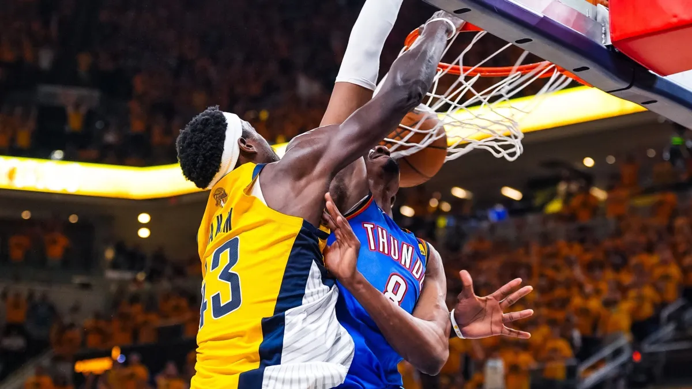

Pacers vencem Thunder e levam Finais da NBA para o jogo 7

Após quase uma década, as Finais da NBA serão decididas em jogo 7. Com as costas na parede, o Indiana Pacers recebeu o Oklahoma City Thunder, na noite desta quinta-feira (19), no Gainbridge Fieldhouse, em Indianápolis, em Indiana, e venceu por 108 a 91 para empatar a série em 3 a 3.
As Finais da NBA não chegavam à sétima partida desde 2016. Na ocasião, o Cleveland Cavaliers perdia a série para o Golden State Warriors — que tinha vencido 73 de 82 jogos na temporada regular, melhor desempenho na história — por 3 a 1, mas ganhou três duelos seguidos para ficar com o título inédito.
Curiosamente, Pacers e Thunder também estão em busca da primeira conquista na NBA. A finalíssima vai ser disputada às 21h de domingo (22), no Paycom Center, em Oklahoma City, em Oklahoma.
Os nomes da partida
O grande destaque do confronto foi Tyrese Haliburton. Mesmo com uma grave lesão na distensão na panturrilha direita e tendo sido dúvida para a partida, o armador conseguiu 14 pontos, cinco assistências, um rebote defensivo e dois roubos de bola. Outros cinco jogadores dos Pacers marcaram pelo menos 10 pontos, sendo que o cestinha foi Obi Toppin, com 20. Do lado dos Thunders, o MVP da temporada regular, Shai Gilgeous-Alexander, anotou 21 pontos.
Pacers fazem o dever de casa e forçam o jogo 7
Ao contrário do que o placar sugere, os donos da casa não lideraram a partida de ponta a ponta. Os visitantes abriram 10 a 2. Pascal Siakam, a oito minutos para o fim do primeiro quarto, marcaram a primeira cesta para os donos da casa depois de dois pontos em lances livres. Depois disso, os Pacers embalaram. A 6 minutos e 43 segundos para o término da primeira parcial, os mandantes viraram para 13 a 12, com bola de três de Andrew Nembhard. A 3 minutos e 23 segundos para o fim, o placar chegou a ser 26 a 17. Os Thunders melhoraram e diminuíram para 28 a 25 após 12 minutos. A primeira cesta do segundo quarto foi de Shai Gilgeous-Alexander, encolhendo a diferença para apenas um ponto. Mas, a partir do 32 a 31 para os donos da casa, quando faltavam 9 minutos e 29 segundos para o fim da parcial, os Pacers começaram a abrir a vantagem que levaria à vitória.
Tanto foi assim que os mandantes foram para o intervalo ganhando por 64 a 42. A volta da partida foi ruim para ambas as equipes. Tanto que os primeiros dois pontos foram marcados a 8 minutos e 7 segundos para o fim, com Haliburton. Os visitantes conseguiram diminuir a diferença para 19 pontos a 5 minutos e 15 segundos para o fim da terceira parcial. Só que os donos da casa melhoraram e fecharam o quarto fazendo 90 a 60 depois de uma linda bola de três de Ben Sheppard. A distância era tamanha que os Thunders voltaram para o último quarto com os reservas.
As Finais da NBA:
- Jogo 1: Thunder 110 x 111 Pacers
- Jogo 2: Thunder 123 x 107 Pacers
- Jogo 3: Pacers 116 x 107 Thunder
- Jogo 4: Pacers 104 x 111 Thunder
- Jogo 5: Thunder 120 x 109 Pacers
- Jogo 6: Pacers 108 x 91 Thunder
- Jogo 7: Domingo (22), às 21h, no Paycom Cente